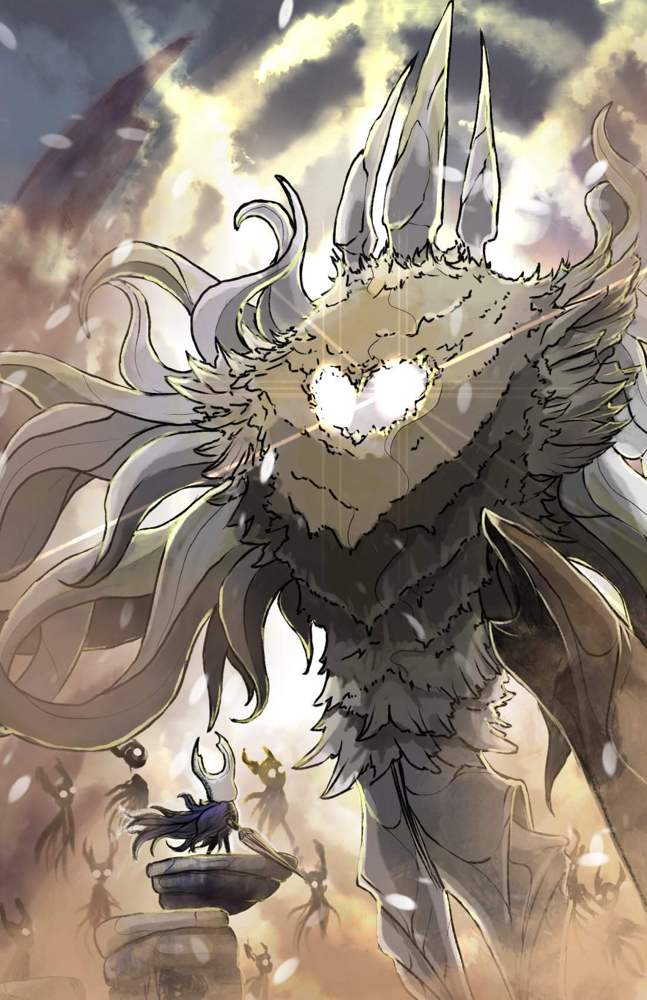
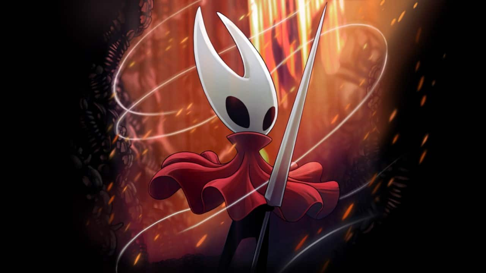

Hollow Knight
O protagonista é o Hollow Knight, um ser vazio, em busca de desvendar o mistério de Hallownest. Numa terra em ruínas, enfrenta inimigos e busca deter uma praga que assola o reino, revelando a verdade sobre seu próprio passado e destino. Uma jornada épica em um mundo sombrio e cativante.

Pale King
O Rei Pálido, Monarca de Hallownest, é uma figura misteriosa. Sua busca por poder o levou à autodestruição, mergulhando o reino na praga. Seu espírito, agora corrompido, é uma ameaça. O protagonista enfrenta desafios para selar o Rei Pálido e restaurar a ordem, desvendando segredos sombrios no processo.

Pure Vassel
O Pure Vessel é uma criação do Rei Pálido, uma entidade poderosa destinada a ser o recipiente perfeito. Ele se torna um desafio formidável para o protagonista, sendo um dos chefes mais difíceis do jogo. Sua luta testa as habilidades do jogador, revelando a verdade sobre a história do reino.

The Radiance
The Radiance é uma divindade onírica e a fonte da praga que aflige Hallownest. Ela representa a luz radiante e é o inimigo final do jogo. A batalha ocorre em um sonho profundo, testando a habilidade do jogador. Derrotá-la é essencial para a cura do reino, marcando um momento crucial na história do jogo.

Hornet
Hornet é uma personagem carismática e misteriosa. Ela é filha da Mestra do Ninho e desempenha vários papéis no jogo. Inicialmente, age como desafiante, testando o protagonista em combate. Mais tarde, torna-se uma aliada importante, colaborando na busca para selar a Praga. Sua história é intrincada e se entrelaça com a do protagonista.

White Lady
A Dama Branca, uma figura majestosa e misteriosa, é uma das entidades antigas de Hallownest. Ela é a "Rainha das Formas Vazias" e desempenha um papel crucial na história. Sua solidão e saudade por seu amor perdido a conectam ao protagonista, resultando em uma busca para preservar sua descendência vazia.